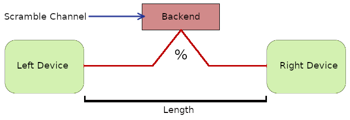

Design Principles¶
Software Implementation¶
QDNS is designed as a layered architecture that uses the request and response protocols. Each layer operates on a different processor core, allowing to simulate a topology with a dynamic number of nodes.

As can be seen in the figure above, there is the simulation kernel at the top. QDNS uses kernel backend handlers with a wrapper. Dynamic connections are allowed because the core hosts the topology. Devices are evenly distributed over each processor core except for the simulation kernel. The highest performance is obtained when the number of nodes in the topology is equal to or less than the number of cores.
Devices¶
The device class refers to each node in the topology. They derive from other classes in terms of their duties.

As can be seen in the image above, its internal structure design of a device. Each device has a network socket that performs communication. It has ports according to the socket type. On the quantum side, it has a photon pump and quantum memory. These photons are actually pointers to a qubits from backend. Every device has an QKD layer that can be used device-wide. Since the software allows simulating multiple applications, there is a default application and user applications that are connected via localhost.
Classes derived from the Device¶
Node: Device with generic settings.
Router: Device with only routing layer.
Observer: Device that capable of middleman attacks.
Channels¶
With the usage of network class, devices can linked with quantum and classic channels. The channel structure can simply shown as the figure below.
